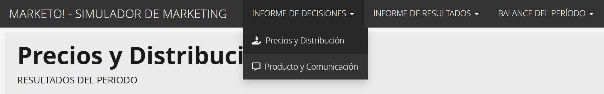
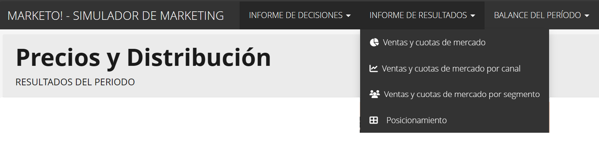
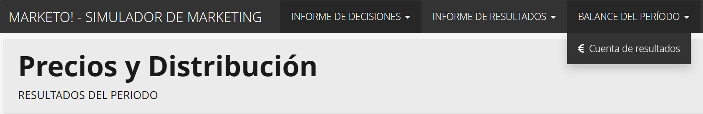

Dinámica de juego
Períodos de decisión, presupuesto e informes.
Número y periodicidad de las decisiones
El simulador consta de tres períodos de decisiones: un periodo inicial de prueba (Período 0), y dos periodos “oficiales” (Períodos I y II). El “Periodo 0” se utiliza como toma de contacto con el mercado y los resultados económicos que se obtengan no computan para los equipos participantes. Tras la ejecución de este período de prueba, el simulador se reinicia, y todas las marcas vuelven a la “casilla de salida”. Los Períodos I y II son los períodos en los que las decisiones que se tomen sí tienen validez y, por tanto, determinarán la posición de cada marca en el mercado.

A todos los efectos, el simulador tratará las decisiones en periodos anuales. Aunque este es un escenario realista para algunas decisiones comerciales (comunicación, por ejemplo), no lo es tanto para decisiones como las de segmentación, que suelen tomarse para horizontes temporales más largos. En cualquier caso, y con el objetivo de enfatizar el aspecto didáctico del simulador, incluso las decisiones de segmentación o las de posicionamiento, podrán variar anualmente.
Las cantidades a incluir en el simulador no deben contener signos de separación de miles. En lugar de escribir 1.000, se debe introducir 1000. Para el precio, sin embargo, se debe utilizar el punto como separador decimal (por ejemplo 4.5, en lugar de 4,5).
Presupuesto disponible
Los equipos competidores parten de la misma situación inicial y con el mismo presupuesto disponible. Dicho presupuesto es de 30 millones de euros, con los que se deben cubrir todos los costes de fabricación y comercialización para los dos períodos oficiales (Períodos I y II). Si alguno de los equipos perdiera todo su capital en el Período I, y no tuviera fondos disponibles para participar en el siguiente periodo, quedaría eliminado sin tener la posibilidad de seguir compitiendo.
El resultado final de las decisiones se reflejará en una tabla de resultados. El equipo ganador será aquel que haya acumulado más capital disponible en el último periodo de decisión (Período II).
Toma de decisiones
Las decisiones se introducirán en un formulario diseñado para cada período, cuyos enlaces se pueden encontrar en la página web del simulador. Los botones etiquetados como “Decisiones”, servirán para introducir las decisiones de cada período.
El calendario en el que se especifican las fechas de entrega de las decisiones tomadas, así como la redacción del informe que las explica y justifica, se publicarán con antelación para que cada equipo pueda organizarse lo mejor posible.
Informe de decisiones y resultados
Una vez cumplido el plazo para que cada equipo tome sus decisiones, el simulador generará el “Informe de Decisiones y Resultados”. Este informe aparecerá en la página web del simulador, en los botones inferiores relativos a cada periodo.
Aunque también es posible consultar los resultados desde dispositivos móviles, sus navegadores están más limitados y algunas partes del informe podrían aparecer deshabilitadas.
El informe de resultados está organizado en las tres pestañas que aparecen en la página web correspondiente: pestaña de decisiones, pestaña de resultados, y balance del período. En la primera pestaña se recogen todas las decisiones que han tomado cada una de las marcas (precios, distribución, diseño de producto, y comunicación) (ver Figura 3).
Figura 3: Informe de decisiones.
En la pestaña de resultados se muestran los distintos apartados que reflejan el impacto de las estrategias de cada marca en el mercado. Se dividen en cuatro apartados: Ventas y cuotas de mercado, Ventas y cuotas de mercado por canal de distribución, Ventas y cuotas de mercado por segmento, y Posicionamiento (Figura 4).
Figura 4: Informe de resultados.
Por último, la tercera pestaña presenta ofrece un resumen económico de cada marca, incluyendo los costes de fabricación, costes comerciales, stock y beneficios obtenidos (Figura 5).
Figura 5: Balance económico.
Ahora, a diseñar la estrategia ganadora!